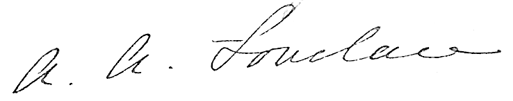
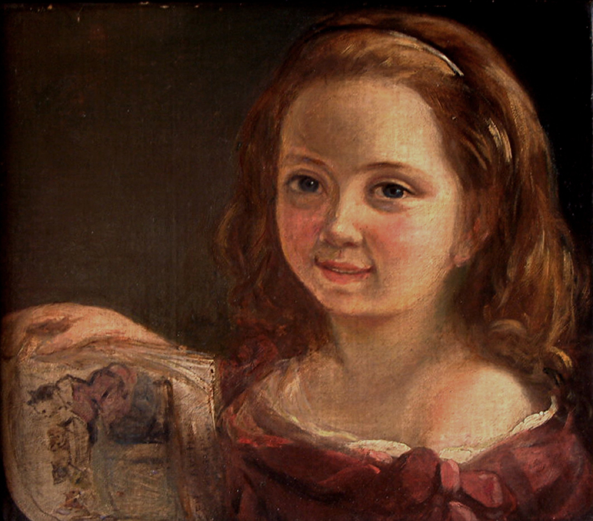

27 November 1852 (aged 36)
Marylebone, London, England
Resting place
Church of St. Mary Magdalene, Hucknall, Nottingham, England
Known for
Mathematics, computing
Spouse
William King-Noel, 1st Earl of Lovelace
(m. 1835)
Children
Byron King-Noel, Viscount Ockham and 12th Baron Wentworth
Anne Blunt, 15th Baroness Wentworth
Ralph King-Milbanke, 2nd Earl of Lovelace
Signature

Augusta Ada King, Countess of Lovelace (née Byron; 10 December 1815 – 27 November 1852) was an English mathematician and writer, chiefly known for her work on Charles Babbage's proposed mechanical general-purpose computer, the Analytical Engine. She was the first to recognise that the machine had applications beyond pure calculation, and to have published the first algorithm intended to be carried out by such a machine. As a result, she is often regarded as the first computer programmer.
Ada Byron was the only legitimate child of poet Lord Byron and Lady Byron.[5] All of Byron's other children were born out of wedlock to other women.[6] Byron separated from his wife a month after Ada was born and left England forever. Four months later, he commemorated the parting in a poem that begins, "Is thy face like thy mother's my fair child! ADA! sole daughter of my house and heart?"[7] He died in Greece when Ada was eight. Her mother remained bitter and promoted Ada's interest in mathematics and logic in an effort to prevent her from developing her father's perceived insanity. Despite this, Ada remained interested in him, naming her two sons Byron and Gordon. Upon her death, she was buried next to him at her request. Although often ill in her childhood, Ada pursued her studies assiduously. She married William King in 1835. King was made Earl of Lovelace in 1838, Ada thereby becoming Countess of Lovelace.
Her educational and social exploits brought her into contact with scientists such as Andrew Crosse, Charles Babbage, Sir David Brewster, Charles Wheatstone, Michael Faraday, and the author Charles Dickens, contacts which she used to further her education. Ada described her approach as "poetical science"[8] and herself as an "Analyst (& Metaphysician)".[9]
When she was a teenager (18), her mathematical talents led her to a long working relationship and friendship with fellow British mathematician Charles Babbage, who is known as "the father of computers". She was in particular interested in Babbage's work on the Analytical Engine. Lovelace first met him in June 1833, through their mutual friend, and her private tutor, Mary Somerville.
Between 1842 and 1843, Ada translated an article by Italian military engineer Luigi Menabrea about the Analytical Engine, supplementing it with an elaborate set of notes, simply called "Notes". Lovelace's notes are important in the early history of computers, containing what many consider to be the first computer program—that is, an algorithm designed to be carried out by a machine. Other historians reject this perspective and point out that Babbage's personal notes from the years 1836/1837 contain the first programs for the engine.[10] She also developed a vision of the capability of computers to go beyond mere calculating or number-crunching, while many others, including Babbage himself, focused only on those capabilities.[11] Her mindset of "poetical science" led her to ask questions about the Analytical Engine (as shown in her notes) examining how individuals and society relate to technology as a collaborative tool.[6]
BIOGRAPHY
Childhood
Lord Byron expected his child to be a "glorious boy" and was disappointed when Lady Byron gave birth to a girl.[12] The child was named after Byron's half-sister, Augusta Leigh, and was called "Ada" by Byron himself.[13] On 16 January 1816, at Lord Byron's command, Lady Byron left for her parents' home at Kirkby Mallory, taking their five-week-old daughter with her.[12] Although English law at the time granted full custody of children to the father in cases of separation, Lord Byron made no attempt to claim his parental rights,[14] but did request that his sister keep him informed of Ada's welfare.

Ada Byron, aged seven, by Alfred d'Orsay, 1822, Somerville College, Oxford.
On 21 April, Lord Byron signed the deed of separation, although very reluctantly, and left England for good a few days later.[16] Aside from an acrimonious separation, Lady Byron continued throughout her life to make allegations about her husband's immoral behaviour.[17] This set of events made Lovelace infamous in Victorian society. Ada did not have a relationship with her father. He died in 1824 when she was eight years old. Her mother was the only significant parental figure in her life.[18] Lovelace was not shown the family portrait of her father until her 20th birthday.[19]
Lovelace did not have a close relationship with her mother. She was often left in the care of her maternal grandmother Judith, Hon. Lady Milbanke, who doted on her. However, because of societal attitudes of the time—which favoured the husband in any separation, with the welfare of any child acting as mitigation—Lady Byron had to present herself as a loving mother to the rest of society. This included writing anxious letters to Lady Milbanke about her daughter's welfare, with a cover note saying to retain the letters in case she had to use them to show maternal concern.[20] In one letter to Lady Milbanke, she referred to her daughter as "it": "I talk to it for your satisfaction, not my own, and shall be very glad when you have it under your own."[21] Lady Byron had her teenage daughter watched by close friends for any sign of moral deviation. Lovelace dubbed these observers the "Furies" and later complained they exaggerated and invented stories about her.[22]
Lovelace was often ill, beginning in early childhood. At the age of eight, she experienced headaches that obscured her vision.[13] In June 1829, she was paralyzed after a bout of measles. She was subjected to continuous bed rest for nearly a year, something which may have extended her period of disability. By 1831, she was able to walk with crutches. Despite the illnesses, she developed her mathematical and technological skills.
When Ada was twelve years old, this future "Lady Fairy", as Charles Babbage affectionately called her, decided she wanted to fly. Ada Byron went about the project methodically, thoughtfully, with imagination and passion. Her first step, in February 1828, was to construct wings. She investigated different material and sizes. She considered various materials for the wings: paper, oilsilk, wires, and feathers. She examined the anatomy of birds to determine the right proportion between the wings and the body. She decided to write a book, Flyology, illustrating, with plates, some of her findings. She decided what equipment she would need; for example, a compass, to "cut across the country by the most direct road", so that she could surmount mountains, rivers, and valleys. Her final step was to integrate steam with the "art of flying".[6]
Ada Byron had an affair with a tutor in early 1833. She tried to elope with him after she was caught, but the tutor's relatives recognised her and contacted her mother. Lady Byron and her friends covered the incident up to prevent a public scandal.[23] Lovelace never met her younger half-sister, Allegra, the daughter of Lord Byron and Claire Clairmont. Allegra died in 1822 at the age of five. Lovelace did have some contact with Elizabeth Medora Leigh, the daughter of Byron's half-sister Augusta Leigh, who purposely avoided Lovelace as much as possible when introduced at court.[24]
Adult Years
Lovelace became close friends with her tutor Mary Somerville, who introduced her to Charles Babbage in 1833. She had a strong respect and affection for Somerville,[25] and they corresponded for many years. Other acquaintances included the scientists Andrew Crosse, Sir David Brewster, Charles Wheatstone, Michael Faraday and the author Charles Dickens. She was presented at Court at the age of seventeen "and became a popular belle of the season" in part because of her "brilliant mind".[26] By 1834 Ada was a regular at Court and started attending various events. She danced often and was able to charm many people, and was described by most people as being dainty, although John Hobhouse, Byron's friend, described her as "a large, coarse-skinned young woman but with something of my friend's features, particularly the mouth".[27] This description followed their meeting on 24 February 1834 in which Ada made it clear to Hobhouse that she did not like him, probably due to her mother's influence, which led her to dislike all of her father's friends. This first impression was not to last, and they later became friends.[28]
Watercolour portrait of Ada King, Countess of Lovelace, circa 1840, possibly by Alfred Edward Chalon
On 8 July 1835, she married William, 8th Baron King, becoming Lady King. They had three homes: Ockham Park, Surrey; a Scottish estate on Loch Torridon in Ross-shire; and a house in London. They spent their honeymoon at Worthy Manor in Ashley Combe near Porlock Weir, Somerset. The Manor had been built as a hunting lodge in 1799 and was improved by King in preparation for their honeymoon. It later became their summer retreat and was further improved during this time. From 1845, the family's main house was Horsley Towers, built in the Tudorbethan fashion by the architect of the Houses of Parliament, Charles Barry,[29][30] and later greatly enlarged to Lovelace's own designs.
They had three children: Byron (born 1836); Anne Isabella (called Annabella, born 1837); and Ralph Gordon (born 1839). Immediately after the birth of Annabella, Lady King experienced "a tedious and suffering illness, which took months to cure".[28] Ada was a descendant of the extinct Barons Lovelace and in 1838, her husband was made Earl of Lovelace and Viscount Ockham,[31] meaning Ada became the Countess of Lovelace.[32] In 1843–44, Ada's mother assigned William Benjamin Carpenter to teach Ada's children and to act as a "moral" instructor for Ada.[33] He quickly fell for her and encouraged her to express any frustrated affections, claiming that his marriage meant he would never act in an "unbecoming" manner. When it became clear that Carpenter was trying to start an affair, Ada cut it off.[34]
In 1841, Lovelace and Medora Leigh (the daughter of Lord Byron's half-sister Augusta Leigh) were told by Ada's mother that Ada's father was also Medora's father.[35] On 27 February 1841, Ada wrote to her mother: "I am not in the least astonished. In fact, you merely confirm what I have for years and years felt scarcely a doubt about, but should have considered it most improper in me to hint to you that I in any way suspected."[36] She did not blame the incestuous relationship on Byron, but instead blamed Augusta Leigh: "I fear she is more inherently wicked than he ever was."[37] In the 1840s, Ada flirted with scandals: firstly, from a relaxed approach to extra-marital relationships with men, leading to rumours of affairs;[38] and secondly, from her love of gambling. She apparently lost more than £3,000 on the horses during the later 1840s.[39] The gambling led to her forming a syndicate with male friends, and an ambitious attempt in 1851 to create a mathematical model for successful large bets. This went disastrously wrong, leaving her thousands of pounds in debt to the syndicate, forcing her to admit it all to her husband.[40] She had a shadowy relationship with Andrew Crosse's son John from 1844 onwards. John Crosse destroyed most of their correspondence after her death as part of a legal agreement. She bequeathed him the only heirlooms her father had personally left to her.[41] During her final illness, she would panic at the idea of the younger Crosse being kept from visiting her.[42]
Education
From 1832, when she was seventeen, her mathematical abilities began to emerge,[26] and her interest in mathematics dominated the majority of her adult life.[43] Her mother's obsession with rooting out any of the insanity of which she accused Byron was one of the reasons that Ada was taught mathematics from an early age. She was privately educated in mathematics and science by William Frend, William King,[a] and Mary Somerville, the noted 19th-century researcher and scientific author. In the 1840s, the mathematician Augustus De Morgan extended her "much help in her mathematical studies" including study of advanced calculus topics including the "numbers of Bernoulli" (that formed her celebrated algorithm for Babbage's Analytical Engine).[44] In a letter to Lady Byron, De Morgan suggested that Ada's skill in mathematics might lead her to become "an original mathematical investigator, perhaps of first-rate eminence".[45]
Lovelace often questioned basic assumptions through integrating poetry and science. Whilst studying differential calculus, she wrote to De Morgan:
I may remark that the curious transformations many formulae can undergo, the unsuspected and to a beginner apparently impossible identity of forms exceedingly dissimilar at first sight, is I think one of the chief difficulties in the early part of mathematical studies. I am often reminded of certain sprites and fairies one reads of, who are at one's elbows in one shape now, and the next minute in a form most dissimilar.[46]
Lovelace believed that intuition and imagination were critical to effectively applying mathematical and scientific concepts. She valued metaphysics as much as mathematics, viewing both as tools for exploring "the unseen worlds around us".[47]
Death
Lovelace died at the age of 36 on 27 November 1852,[48] from uterine cancer.[49] The illness lasted several months, in which time Annabella took command over whom Ada saw, and excluded all of her friends and confidants. Under her mother's influence, Ada had a religious transformation and was coaxed into repenting of her previous conduct and making Annabella her executor.[50] She lost contact with her husband after confessing something to him on 30 August which caused him to abandon her bedside. It is not known what she told him.[51] She was buried, at her request, next to her father at the Church of St. Mary Magdalene in Hucknall, Nottinghamshire. A memorial plaque, written in Latin, to her and her father is in the chapel attached to Horsley Towers.
WORK
Throughout her life, Lovelace was strongly interested in scientific developments and fads of the day, including phrenology[52] and mesmerism.[53] After her work with Babbage, Lovelace continued to work on other projects. In 1844, she commented to a friend Woronzow Greig about her desire to create a mathematical model for how the brain gives rise to thoughts and nerves to feelings ("a calculus of the nervous system").[54] She never achieved this, however. In part, her interest in the brain came from a long-running pre-occupation, inherited from her mother, about her "potential" madness. As part of her research into this project, she visited the electrical engineer Andrew Crosse in 1844 to learn how to carry out electrical experiments.[55] In the same year, she wrote a review of a paper by Baron Karl von Reichenbach, Researches on Magnetism, but this was not published and does not appear to have progressed past the first draft.[56] In 1851, the year before her cancer struck, she wrote to her mother mentioning "certain productions" she was working on regarding the relation of maths and music.[57]0
Portrait of Ada by British painter Margaret Sarah Carpenter (1836)
Lovelace first met Charles Babbage in June 1833, through their mutual friend Mary Somerville. Later that month, Babbage invited Lovelace to see the prototype for his difference engine.[58] She became fascinated with the machine and used her relationship with Somerville to visit Babbage as often as she could. Babbage was impressed by Lovelace's intellect and analytic skills. He called her "The Enchantress of Number".[59][b] In 1843, he wrote to her:
Forget this world and all its troubles and if possible its multitudinous Charlatans—every thing in short but the Enchantress of Number.[59]
During a nine-month period in 1842–43, Lovelace translated the Italian mathematician Luigi Menabrea's article on Babbage's newest proposed machine, the Analytical Engine.[60] With the article, she appended a set of notes.[61] Explaining the Analytical Engine's function was a difficult task; many other scientists did not grasp the concept and the British establishment had shown little interest in it.[62] Lovelace's notes even had to explain how the Analytical Engine differed from the original Difference Engine.[63] Her work was well received at the time; the scientist Michael Faraday described himself as a supporter of her writing.[64]
The notes are around three times longer than the article itself and include (in Note G),[65] in complete detail, a method for calculating a sequence of Bernoulli numbers using the Analytical Engine, which might have run correctly had it ever been built[66] (only Babbage's Difference Engine has been built, completed in London in 2002).[67] Based on this work, Lovelace is now considered by many to be the first computer programmer[2] and her method has been called the world's first computer program.[68] Others dispute this because some of Charles Babbage's earlier writings could be considered computer programs.
Note G also contains Lovelace's dismissal of artificial intelligence. She wrote that "The Analytical Engine has no pretensions whatever to originate anything. It can do whatever we know how to order it to perform. It can follow analysis; but it has no power of anticipating any analytical relations or truths." This objection has been the subject of much debate and rebuttal, for example by Alan Turing in his paper "Computing Machinery and Intelligence".[69] Most modern computer scientists argue that this view is outdated and that computer software can develop in ways that cannot necessarily be anticipated by programmers.[70]
Lovelace and Babbage had a minor falling out when the papers were published, when he tried to leave his own statement (criticising the government's treatment of his Engine) as an unsigned preface, which could have been mistakenly interpreted as a joint declaration. When Taylor's Scientific Memoirs ruled that the statement should be signed, Babbage wrote to Lovelace asking her to withdraw the paper. This was the first that she knew he was leaving it unsigned, and she wrote back refusing to withdraw the paper. The historian Benjamin Woolley theorised that "His actions suggested he had so enthusiastically sought Ada's involvement, and so happily indulged her ... because of her 'celebrated name'."[71] Their friendship recovered, and they continued to correspond. On 12 August 1851, when she was dying of cancer, Lovelace wrote to him asking him to be her executor, though this letter did not give him the necessary legal authority. Part of the terrace at Worthy Manor was known as Philosopher's Walk; it was there that Lovelace and Babbage were reputed to have walked while discussing mathematical principles.[64]
First Computer Program
1840, Babbage was invited to give a seminar at the University of Turin about his Analytical Engine. Luigi Menabrea, a young Italian engineer and the future Prime Minister of Italy, transcribed Babbage's lecture into French, and this transcript was subsequently published in the Bibliothèque universelle de Genève in October 1842. Babbage's friend Charles Wheatstone commissioned Ada Lovelace to translate Menabrea's paper into English. She then augmented the paper with notes, which were added to the translation. Ada Lovelace spent the better part of a year doing this, assisted with input from Babbage. These notes, which are more extensive than Menabrea's paper, were then published in the September 1843 edition of Taylor's Scientific Memoirs under the initialism AAL.[72]
Ada Lovelace's notes were labelled alphabetically from A to G. In note G, she describes an algorithm for the Analytical Engine to compute Bernoulli numbers. It is considered to be the first published algorithm ever specifically tailored for implementation on a computer, and Ada Lovelace has often been cited as the first computer programmer for this reason.[73][74] The engine was never completed and so her program was never tested.[75]
In 1953, more than a century after her death, Ada Lovelace's notes on Babbage's Analytical Engine were republished as an appendix to B. V. Bowden's Faster than Thought: A Symposium on Digital Computing Machines.[76] The engine has now been recognised as an early model for a computer and her notes as a description of a computer and software.[66]
Services
Computer Programming
Translation of Article
Mathematical Calculations
Programmable Computing Machine
Projects
Translation from the French of an article on the Analytical Engine
The Notes included the first published description of a stepwise sequence of operations for solving certain mathematical problems
Calculation of Bernoulli Numbers
Wrote of one such sequence—how to calculate Bernoulli Numbers—is regarded by computer historians as the first computer program.